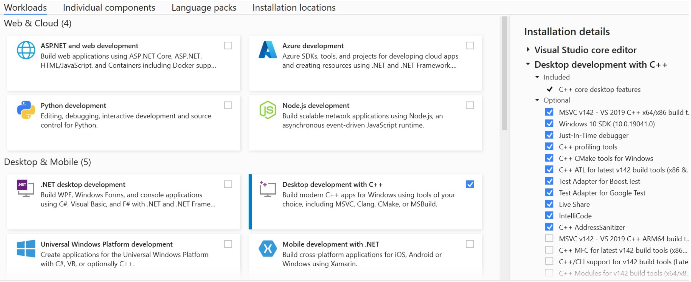
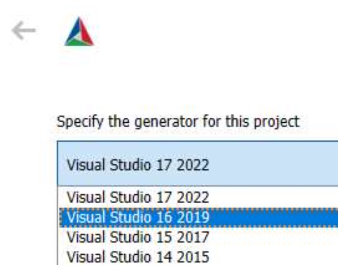
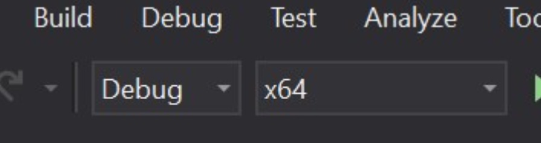
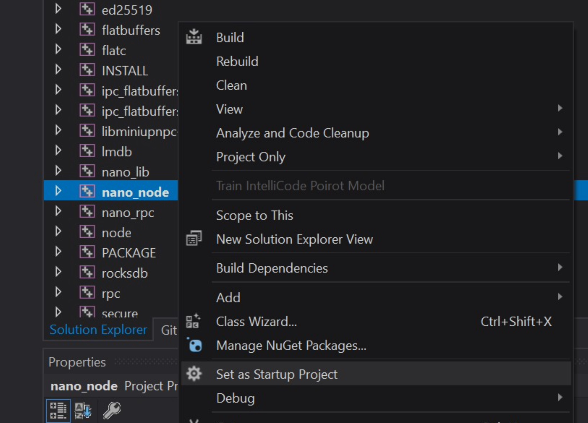
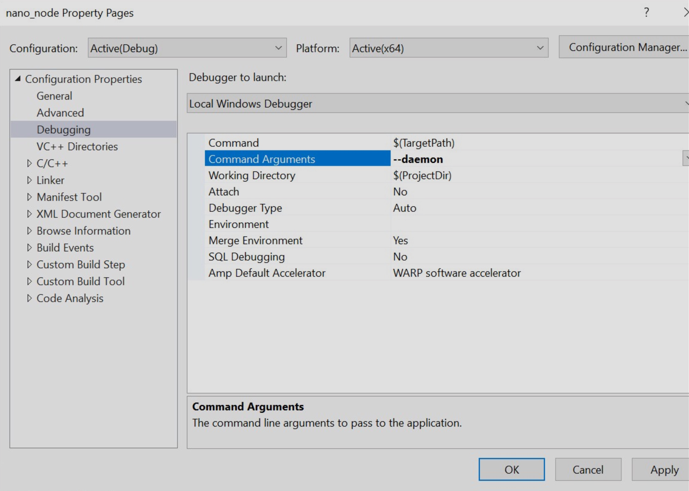

Build Options¶
Only Official Builds Supported
- The fastest and most recommended method of installation is through Docker management
- Only official release builds are recommended and supported for use on the main network
- Builds created from git should be done using the available release tags (
V21.2etc.)
Official release builds¶
Throughout the development cycle and after releases official builds of the node for Docker, Linux, macOS and Windows are generated and published for test, beta and main networks.
| OS | Download link/command | Verification |
|---|---|---|
| Universal Linux | https://repo.nano.org/live/binaries/nano-node-V28.2-Linux.tar.bz2 | SHA256 Checksum |
| Debian | https://repo.nano.org/live/binaries/nano-node-V28.2-Linux.deb | SHA256 Checksum |
| macOS | https://repo.nano.org/live/binaries/nano-node-V28.2-Darwin.dmg | SHA256 Checksum |
| Windows (exe) | https://repo.nano.org/live/binaries/nano-node-V28.2-win64.exe | SHA256 Checksum |
| Windows (zip) | https://repo.nano.org/live/binaries/nano-node-V28.2-win64.zip | SHA256 Checksum |
| Docker | docker pull nanocurrency/nano:V28.2See Pulling the Docker Image for more details. |
|
| RHEL/RockyLinux rpm | Not available anymore. Please check Build Options for build instructions. |
| OS | Download link/command |
|---|---|
| Universal Linux | https://repo.nano.org/test/binaries/nano-node-V28.2-Linux.tar.bz2 |
| Debian | https://repo.nano.org/test/binaries/nano-node-V28.2-Linux.deb |
| macOS | https://repo.nano.org/test/binaries/nano-node-V28.2-Darwin.dmg |
| Windows (exe) | https://repo.nano.org/test/binaries/nano-node-V28.2-win64.exe |
| Windows (zip) | https://repo.nano.org/test/binaries/nano-node-V28.2-win64.zip |
| Docker | docker pull nanocurrency/nano-test:V28.2 |
| RHEL/RockyLinux rpm | Not available anymore. Please check Build Options for build instructions. |
Join the nano Discord server and head to the #beta-announcements channel for the latest build details.
Nano Directory¶
Contents¶
The Nano directory contains:
- Node wallet files (
wallets.ldb,wallets.ldb-lock) - Configuration files
- Log files
- Ledger files (
data.ldbanddata.ldb-lockfor default LMDB, orrocksdbdirectory with files for optional RocksDB backend) - Directory for wallet backups (
backup)
Protect wallet and backup files
The built-in node wallet is for use in development and testing only. Those using it should take care in protecting access to the wallets.ldb file and backup files, whether encrypted or not, for added security.
Locations¶
| OS/Build | Location |
|---|---|
| Windows | C:\Users\<user>\AppData\Local\Nano\ |
| macOS | /Users/<user>/Library/Nano/ |
| Linux | /home/<user>/Nano/ |
| Docker | As defined by the -v flag in the docker run command |
| .deb/rpm | /var/nanocurrency/Nano |
| OS | Location |
|---|---|
| Windows | C:\Users\<user>\AppData\Local\NanoTest\ |
| macOS | /Users/<user>/Library/NanoTest/ |
| Linux | /home/<user>/NanoTest/ |
| Docker | As defined by the -v flag in the docker run command |
| .deb/rpm | /var/nanocurrency/NanoTest |
| OS | Location |
|---|---|
| Windows | C:\Users\<user>\AppData\Local\NanoBeta\ |
| macOS | /Users/<user>/Library/NanoBeta/ |
| Linux | /home/<user>/NanoBeta/ |
| Docker | As defined by the -v flag in the docker run command |
| .deb/rpm | /var/nanocurrency/NanoBeta |
Moving directory locations
Some users desire to change the blockchain download location. A solution is available for the no gui nano_node (see https://github.com/nanocurrency/nano-node/issues/79), but no concrete solution is available for the GUI client. However, a workaround can be acheived via the use of symbolic links. Below is a short tutorial for Windows builds:
- Rename/delete the Nano directory in your
appdataLocal directory (if you haven't run the wallet yet, skip this step). This is necessary because the command to create a symbolic link in windows will fail if the the input directory already exists. - Decide on where you want to store the blockchain and create a symbolic link. The command is (in an administrative command-prompt):
mklink /d "C:\Users\<user>\AppData\Local\Nano\" "E:\Some\Other\Directory". This command creates a symbolic link for a directory (/d) that 'redirects' all requests for files/directories in theLocal\Nanodirectory to theOther\Directory. This means that a file created in the input directory will actually be in the output directory (on the other disk). - Verify it works. Create a file in your Nano directory in your appdata, and you should see it appear in the directory you linked it to (and vice-versa). If you have old wallets or a partially-downloaded blockchain, copy them back into the local directory. Start the wallet.
Requirements & setup¶
Unsupported configuration
- This documentation is intended only for developers of the Nano Node software, and will not result in a supported configuration. End-users are advised to use releases.
- The fastest and most recommended method of installation is through Docker.
- Running node as a service.
- To manage a node, use RPC commands or the CLI.
Alternate Windows setup
Some users have trouble using the command line approach below for getting setup to build on Windows. An alternative setup is available further down for Windows 10 & Visual Studio 2019. Variations on these instructions with different versions of Windows, Visual Studio, Cmake, etc. may work as well, but may require adjustments.
Boost (before V25.0)¶
If you are building a version before V25.0, the node build commands further down include bootstrapping Boost, but pre-built binaries can be used for Windows as well, or you can optionally build from the downloaded source instead as follows:
- Download Boost 1.81+
- Extract to [boost.src]
- From inside [boost.src] run:
./bootstrap.sh --with-libraries=context,coroutine,filesystem,log,program_options,system,thread
./b2 --prefix=[boost] --build-dir=[boost.build] link=static install
./bootstrap.sh --with-libraries=context,coroutine,filesystem,log,program_options,system,thread
./b2 --prefix=[boost] --build-dir=[boost.build] link=static install
./bootstrap.sh --with-libraries=context,coroutine,filesystem,log,program_options,system,thread
./b2 --prefix=[boost] --build-dir=[boost.build] address-model=64 link=static install
If using this option, remove bash util/build_prep/bootstrap_boost.sh -m from the build command below.
Qt wallet¶
If building the Qt-based nano_wallet, first download Qt 5.15.2+ open source edition and extract to [qt.src]. In [qt.build] execute:
[qt.src]/configure -shared -opensource -nomake examples -nomake tests -confirm-license -prefix [qt]
make
make install
[qt.src]/configure -shared -opensource -nomake examples -nomake tests -confirm-license -prefix [qt]
make
make install
[qt.src]/configure -shared -opensource -nomake examples -nomake tests -confirm-license -prefix [qt]
nmake
nmake install
Node¶
Required build tools
- CMake >= 3.8
- Clang >= 11 or GCC >= 11.3
Version
- Debian 11 Bullseye (requires Clang 11)
Install dependencies
sudo apt-get update && sudo apt-get upgrade
sudo apt-get install git cmake build-essential libc++-dev libc++abi-dev clang clang++11 curl wget
sudo apt-get install qtbase5-dev qtchooser qt5-qmake qtbase5-dev-tools
Qt wallet dependencies
sudo apt-get install qtbase5-dev qtchooser qt5-qmake qtbase5-dev-tools
Before build
export CC=/usr/bin/clang-11
export CXX=/usr/bin/clang++-11
cmake ...
Version
- Ubuntu 22.04 LTS Server
- Ubuntu 22.10+
Install dependencies
sudo apt-get update && sudo apt-get upgrade
sudo apt-get install git cmake g++ curl wget
Qt wallet dependencies
sudo apt-get install qtbase5-dev qtchooser qt5-qmake qtbase5-dev-tools
Version
- Rocky Linux 8
Install dependencies
sudo yum check-update
sudo yum install git curl wget cmake
Configure repository with modern GCC
sudo yum install gcc-toolset-12
scl enable gcc-toolset-12 bash
Install dependencies
pacman -Syu
pacman -S base-devel git gcc cmake curl wget
Required build tools
- CMake >= 3.8
- XCode >= 13.1
Required build tools
- CMake >= 3.8
- NSIS package builder
- Visual Studio 2019 Community (or higher edition, if you have a valid license. eg. Professional or Enterprise)
- Select Desktop development with C++
- Select the latest Windows 10 SDK
Build commands¶
Node¶
The process below will create a release build of the node for the main network. See network options below for details on building for the test or beta networks.
git clone --branch V25.0 --recursive https://github.com/nanocurrency/nano-node.git nano_build
cd nano_build
# Boost is not required for building V25.0 or earlier versions
# export BOOST_ROOT=`pwd`/../boost_build
# bash util/build_prep/bootstrap_boost.sh -m
cmake -G "Unix Makefiles" .
make nano_node
cp nano_node ../nano_node && cd .. && ./nano_node --diagnostics
git clone --branch V25.0 --recursive https://github.com/nanocurrency/nano-node.git nano_build
cd nano_build
# Boost is not required for building V25.0 or earlier versions
# export BOOST_ROOT=`pwd`/../boost_build
# bash util/build_prep/bootstrap_boost.sh -m
cmake -G "Unix Makefiles" .
make nano_node
cp nano_node ../nano_node && cd .. && ./nano_node --diagnostics
Setup
Download Source
Using git_bash:
git clone --branch V25.0 --recursive https://github.com/nanocurrency/nano-node
cd nano-node
Create a build directory inside nano-node (makes for easier cleaning of build)
Using git_bash:
mkdir build
cd build
Get redistributables
Using Powershell:
Invoke-WebRequest -Uri https://aka.ms/vs/16/release/vc_redist.x64.exe -OutFile .\vc_redist.x64.exe
Generate the build configuration.
Using 64 Native Tools Command Prompt:
- Ensure the Qt, Boost (if < V25.0), and Windows SDK paths match your installation.
cmake -DNANO_GUI=ON -DQt5_DIR="C:\Qt\5.15.2\msvc2019_64\lib\cmake\Qt5" -DNANO_SIMD_OPTIMIZATIONS=TRUE -DBoost_COMPILER="-vc141" -DBOOST_ROOT="C:/local/boost_1_70_0" -DBOOST_LIBRARYDIR="C:/local/boost_1_70_0/lib64-msvc-14.1" -G "Visual Studio 16 2019" -DIPHLPAPI_LIBRARY="C:/Program Files (x86)/Windows Kits/10/Lib/10.0.19041.0/um/x64/iphlpapi.lib" -DWINSOCK2_LIBRARY="C:/Program Files (x86)/Windows Kits/10/Lib/10.0.19041.0/um/x64/WS2_32.lib" ..\.
- If you are building V25.0 or any earlier version, you do not need to specify the Boost library.
cmake -DNANO_GUI=ON -DQt5_DIR="C:\Qt\5.15.2\msvc2019_64\lib\cmake\Qt5" -DNANO_SIMD_OPTIMIZATIONS=TRUE -G "Visual Studio 16 2019" -DIPHLPAPI_LIBRARY="C:/Program Files (x86)/Windows Kits/10/Lib/10.0.19041.0/um/x64/iphlpapi.lib" -DWINSOCK2_LIBRARY="C:/Program Files (x86)/Windows Kits/10/Lib/10.0.19041.0/um/x64/WS2_32.lib" ..\.
Build
- Open
nano-node.slnin Visual Studio - Build the configuration specified in the previous step
- Alternative using 64 Native Tools Command Prompt:
cmake --build . --target ALL_BUILD --config %CONFIGURATION% -- /m:%NUMBER_OF_PROCESSORS%
Package up binaries
Using 64 Native Tools Command Prompt:
- Replace %CONFIGURATION% with the build configuration specified in previous step
- Replace %GENERATOR% with NSIS (if installed) or ZIP
cpack -G %GENERATOR% -C %CONFIGURATION%
Qt wallet¶
This is only required when the Qt wallet with GUI is needed.
make nano_wallet
RPC server¶
This is only required for when the RPC server is being run as a child process or outside the node process completely.
make nano_rpc
Windows & Visual Studio¶
An alternative node building process using Windows and Visual Studio can be found below. As this uses GUI options, some of the steps and images may vary if using versions other than those indicated.
Windows
Ensure Windows 10 or Windows 11 is running and the latest updates have been completed, restart Windows.
Visual Studio
Use Visual Studio 2019 or 2022
Visual Studio Community 2019 https://visualstudio.microsoft.com/vs/older-downloads/
Visual Studio Community 2022 https://visualstudio.microsoft.com/vs/community/
Run the installer and make sure to tick Desktop development with C++ and leave everything else at default.

Boost (Only needed when building versions before V25.0)
Install Boost 1.81.0 binaries for msvc 14.2. Use default settings during install https://sourceforge.net/projects/boost/files/boost-binaries/1.81.0/boost_1_81_0-msvc-14.2-64.exe/download
CMake
Install Cmake windows installer, Latest Release https://cmake.org/download/.
Check the option Add cmake to system path for all users
Git
Download a git tool of choice such as Github desktop https://desktop.github.com/. Clone the nano node develop branch from Github
from URL https://github.com/nanocurrency/nano-node to your preferred path, such as: C:\Users\YourUser\Documents\GitHub\nano-node.
Restart Windows
Setting up the solution
Run CMake GUI
- Set
Where is the source codeto your preferred path:C:\Users\YourUser\Documents\GitHub\nano-node - Create a directory for the destination files such as:
C:\Users\YourUser\Documents\NanoSolutionand set inWhere to build the binaries - Click
Configureand selectVisual Studio 16 2019as the generator for the project - Set any necessary CMake variables you need, such as the
ACTIVE_NETWORKbut leaveNANO_GUIoff because this requires QT to be installed - Click
Generateand close Cmake

Visual studio
- Open project solution file in
C:\Users\YourUser\Documents\NanoSolution\nano-node-beta.sln - At the top of the screen select the build type and architecture.
Releaseandx64are recommended settings

- Go to the build menu and select
Build - When build has finished you will find the compiled files at
C:\Users\YourUser\Documents\NanoBinaries\
Optional: Setup debugging
You can setup the node to stop at code breakpoints and then inspect values during runtime.
Find the nano_node project in the solution explorer on the right pane. Then right click it and select Set as startup project

Right click the nano_node project again and click Properties
Go to Configuration Properties > Debugging and set the Command Arguments to --daemon, click OK

From Visual Studio hit F5 to start debugging. When a breakpoint is hit, Visual Studio will halt the code and take focus.
Additional build details¶
Node¶
CMake variables¶
Format: cmake -D VARNAME=VARVALUE
BOOST_ROOT=\[boost\](/usr/local/boost/if bootstrapped)CMAKE_BUILD_TYPE=Release(default)ACTIVE_NETWORK=nano_live_network(default)Qt5_DIR=[qt]lib/cmake/Qt5(to build GUI wallet)NANO_GUI=ON(to build GUI wallet)ENABLE_AVX2=ON, optionalPERMUTE_WITH_GATHER=ON, optionalPERMUTE_WITH_SHUFFLES=ON(for CPU with AXV2 support, choose fastest method for your CPU with https://github.com/sneves/blake2-avx2/)CRYPTOPP_CUSTOM=ON(more conservative building of Crypto++ for wider range of systems)NANO_SIMD_OPTIMIZATIONS=OFF(Enable CPU-specific SIMD optimization: SSE/AVX or NEON, e.g.)NANO_SECURE_RPC=ON(to build node with TLS)NANO_WARN_TO_ERR=ON(v20.0+ turn compiler warnings into errors on Linux/Mac)NANO_TIMED_LOCKS=50(v20.0+ when the number of milliseconds a mutex is held is equal or greater than this output a stacktrace, 0 disables.)NANO_STACKTRACE_BACKTRACE=ON(v20.0+ use a different configuration of Boost backtrace in stacktraces, attempting to display filenames, function names and line numbers. Needslibbacktraceto be installed. Some workarounds may be necessary depending on system and configuration. Use CLI--debug_stacktraceto get an example output.)CI_BUILD=TRUE(v20.0+ if enabled, uses environment variableTRAVIS_TAG(required) to modify the locally reported node version; exampleTRAVIS_TAG="My Nano Node v20")NANO_ASIO_HANDLER_TRACKING=10(Output asio diagnostics for any completion handlers which have taken longer than this in milliseconds. For more information see the description of the PR #2681)NANO_FUZZER_TEST=ON(Build the fuzz tests, not available on Windows)
Building a package¶
cpack -G "TBZ2"
cpack -G "DragNDrop"
cpack -G "NSIS"
Network options¶
Main network
The default build network is the main network. No option needs to be specified.
Test Network
- To run a node on the test network, set CMake variable:
-DACTIVE_NETWORK=nano_test_network - More information can be found on the Test Network page
Beta Network
- To run a node on the beta network, set CMake variable:
-DACTIVE_NETWORK=nano_beta_network - More information can be found on the Beta Network page
Testing¶
A number of tests binaries can be built when the CMake variable -DNANO_TEST=ON. With this variable set, make will also build test files, and will produce core_test, rpc_test, load_test and slow_test binaries, which can be executed:
core_test- Tests the majority of protocol, node and network functionality.slow_test- Tests which operate on a large amount of data and may take a while. Not currently tested by CI.rpc_test- Tests all RPC commandsload_test- Launches many nodes and RPC servers, checking sending/receiving blocks with simultaneous calls. Use./load_test --helpto see the available options
Running Tests¶
To run all tests in a binary just launch it:
./core_test
To check a specific subset of tests, gtest filtering can be used (with optional wildcards):
./core_test --gtest_filter=confirmation_height.single
./rpc_test --gtest_filter=rpc.*
To run tests multiple times:
./core_test --gtest_repeat=10
If running on a debugger, add the argument --gtest_break_on_failure break at the moment a test fails.
Environment variables to customize tests¶
TEST_KEEP_TMPDIRS=1- Setting this to anything will prevent the tests deleting any files it creates, useful for debugging log files.TEST_USE_ROCKSDB=1- Use the RocksDB ledger backend for the tests instead of LMDB. The tests must be built with RocksDB support.TEST_BASE_PORT=26000- The base port used in tests, the range of ports used in this case would be 26000 - 26199. This is useful if wanting to run multiple tests at once without port conflicts, the default base port used is 24000.NANO_DEFAULT_PEER=peering.nano.org- Setting this adds its variable contents topreconfigured_peersfrom config-node.toml, & allows manually setting initial peering DNS. Setting it to an unresolvable address will prevent the node from contacting peers (after wiping peer table).
Sanitizers¶
3 different CMake sanitizer options are supported: NANO_ASAN_INT, NANO_TSAN and NANO_ASAN. They cannot be used in conjunction with each other.
Thread Sanitizer¶
Use -DNANO_TSAN=ON as an extra CMake option. The following environment variable should also be set:
export TSAN_OPTIONS="suppressions=../tsan_suppressions"
tsan_suppressions should be a path to the file in the root nano directory. This suppresses many errors relating to the mdb and rocksdb libraries.
Address Sanitizer¶
Use the CMake variable -DNANO_ASAN=ON or -DNANO_ASAN_INT=ON before running an executable.
Valgrind¶
Valgrind can be used to find other issues such as memory leaks. A valgrind suppressions file is provided to remove some warnings. Valgrind can be run as follows (there are many options available):
valgrind --leak-check=full --track-origins=yes --suppressions=../valgrind.supp ./core_test